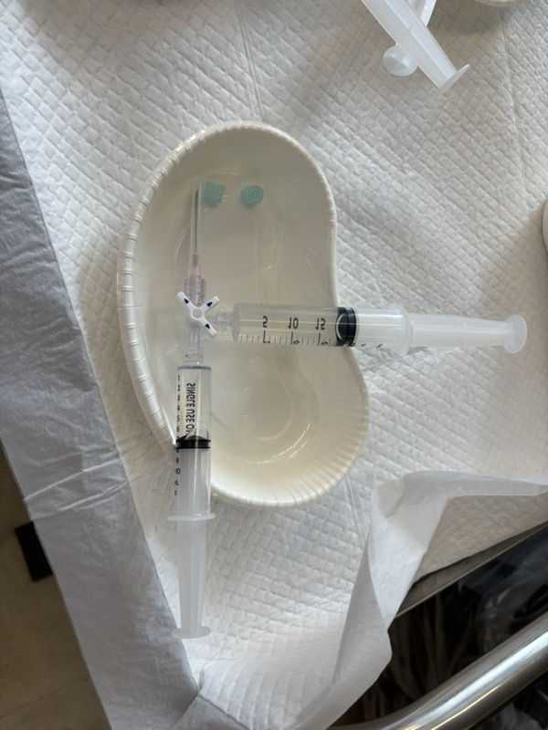
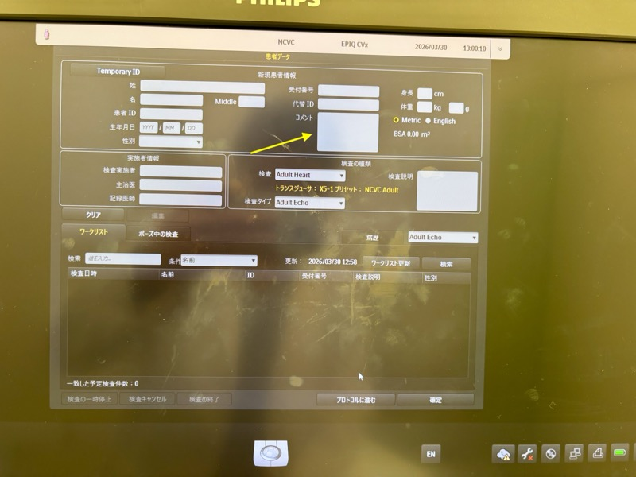
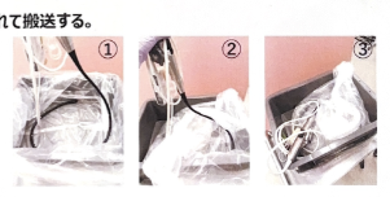

検査フロー
事前準備
→
患者呼出
→
前処置室
検査室
→
退室
→
その後
1. 事前準備編
- 症例数をHIS外来→TEEまたはエコー発番リストから確認
- 共有パワーポイントに症例を記載
- 予定患者リストを検査室内に掲示（外来は予約時間も記載）
- ミダゾラム使用有無の同意書を確認→パワポに静脈麻酔の有・無を記載
- 医療安全チェックシートをYageeからコピー
- 前回のTEE・TTE結果をコピー
- オーダー表（マネージの机から取得）+ チェックシート + 検査結果 → クリアファイル → 棚側面box
- 指導医に連絡（症例順番・二部屋運用の相談）
- 生食・3方活栓の準備
- 入院: 20ccロック付シリンジ(生食18mL+18G針) + 10ccロック付シリンジ(生食8-10mL+3方活栓)
- 外来: 上記 + 末梢確保の準備

2. 患者呼び出し編
- 検査優先順位を確認: (1)外来予約→(2)当日DC血栓チェック→(3)入院→(4)出張TEE
- 前処置室の混雑状況を確認（呼出し過ぎ注意）
- [外来] 予約時間通りに検査できるよう順番調整
WARNING: 呼出し過ぎると前処置室が混雑→患者間違い・順番前後のリスク
INFO: 泉先生は会議のため時間制限あり→弁膜症を先に行うことも（要確認）
3. 前処置室編
- タイムアウト(1): 名前・生年月日・ID確認（2名以上で実施）
- 看護師からミダゾラム1A + 生食20mLを受取（IDカードは看護師に返却）
- 入れ歯・抜けそうな歯チェック（入れ歯は外す）
- 安全チェックシートに沿った確認
- 点滴確認（末梢が詰まっていないか、生食が流れるか）
- [外来] 末梢確保
- [外来] 鎮静薬使用の同意書確認（家族同伴・運転なし必須）
- ミダゾラム管理手順の確認
- 局所麻酔: キシロカインスプレー3噴霧×3セット（計9噴霧）
WARNING: タイムアウト(1)は必ず2名以上で実施すること
CRITICAL: [外来] 家族同伴・運転なしでないと鎮静不可（過去に自家用車で来院し鎮静した事例あり）
WARNING: ミダゾラム — 定数4本金庫管理、医師は金庫を自分で開けず技師から受取、記録簿は技師が記載、16:00までに事後処方（処方コメント「心エコーに薬剤を払い出し」必須）
CRITICAL: キシロカインスプレー合計20噴霧（リドカイン160mg）以上禁止（過去に中毒例あり、高齢者は特に注意）
4. 検査室編
- ファイル・点滴(ミダゾラム等)を持って入室
- FUJITSUエコー発番カルテで発番（経食道心エコー→受付→発番→ID・検査室入力）
- エコー本体に患者ID入力→検索→選択
- プローベナンバーを記入（エコー本体の真ん中やや右）
- タイムアウト(2): 名前 + IDカード/リストバンドで確認
- Vital測定→安全確認シートに記入
- プローベカバー装着
- マウスピース装着
- ミダゾラム投与準備（投与量は上級医に相談）
- 血圧モニタリング開始（開始時・15分おき・終了時に測定→用紙+電カルテンプレート）
WARNING: タイムアウト(2)を忘れずに実施
CRITICAL: マウスピースを必ず装着（プローベ損傷の最大原因、定期的に噛んでいないか確認）

5. 退室編
- プローベ抜去→カバー外し→ガウン脱ぎ→洗浄場所へ
- 患者を起こして車椅子に移動
- [入院] 病棟に電話して迎え呼び
- [外来] PHS 40496にTEL→外来看護師呼出
- [外来] 覚醒確認→帰宅可能の判断
- プローベをBox→チャイム（消毒液つけっぱなし注意）
- 感染対策手順の実施
- 後片付け（キシロカインゼリー等の清掃、文書類整理）
- パワポの表を担当技師に提出
- 使用ミダゾラム数の確認
CRITICAL: 看護師引継ぎまで誰かが密に監視（過去に転倒事故あり）

6. その後
- 時間外: プローベ消毒・物品片付け・プローベナンバー記入を必ず行う
- 小児用プローベ: 藤本先生に連絡
7. 個別の問題
- 緑内障患者のミダゾラム: 科内で検討中
- プローベ損傷: マウスピース装着必須
8. これまでの事例
1キシロカインショックの事例
2通路で放置されていた事例
3ミダゾラム数の不一致事例
4外来患者が自家用車で来ているのに鎮静した事例
5ミダゾラム投与なしなのに投与された事例
6外来患者を長時間待たせた事例
7笑い声が気になるというクレーム
8結核患者にTEE施行した事例
感染対策
事前確認
- 患者の発熱・咳嗽・感染症状の確認
手指衛生タイミング
つけるとき
- 患者に触れる前
- プローブに触れる前
- 静脈注射の前
脱いだ後
- 手袋を脱いだ後
- 患者や環境に触れた後
WARNING: 安易な手袋つけっぱなし禁止（患者を危険にさらす）
PPE装着順（飛沫予防策）
アイソレーションガウン
サージカルマスク
ゴーグル
手指衛生
手袋
PPE装着順（標準予防策）
プラスチックエプロン
サージカルマスク
手袋
PPE脱衣順（検査室内で脱ぐ）
手袋
最も汚染→最初に外す
ガウン
エプロン
ゴーグル
マスク
手指衛生
プローブ搬送
先端カバー装着
ハンドル・ケーブル・コネクタを清拭
ビニール袋で被覆
コンテナに入れて搬送
ケーブルを曲げないようハンドルを出す
検査室清掃
- ディスポシーツ交換
- 環境拭き取り清掃（手すり・スイッチ・エコー操作盤をソフライトで拭く）
入院
外来
1. 事前準備
0/9
症例数をHIS外来→TEEまたはエコー発番リストから確認
共有パワーポイントに症例を記載
予定患者リストを検査室内に掲示（外来は予約時間も記載）
ミダゾラム使用有無の同意書確認→パワポに記載
医療安全チェックシートをYageeからコピー
前回のTEE・TTE結果をコピー
オーダー表+チェックシート+検査結果→クリアファイル→棚側面box
指導医に連絡（症例順番・二部屋運用の相談）
生食・3方活栓の準備
2. 患者呼び出し
0/3
検査優先順位を確認
前処置室の混雑状況を確認
予約時間通りに検査できるよう順番調整外来
⚠️ 呼出し過ぎると前処置室が混雑→患者間違い・順番前後のリスク
3. 前処置室
0/9
タイムアウト(1): 名前・生年月日・ID確認（2名以上）
⚠️ タイムアウト(1)は必ず2名以上で実施すること
看護師からミダゾラム1A + 生食20mLを受取
入れ歯・抜けそうな歯チェック
安全チェックシートに沿った確認
点滴確認（末梢が詰まっていないか）
末梢確保外来
鎮静薬使用の同意書確認（家族同伴・運転なし必須）外来
⛔ [外来] 家族同伴・運転なしでないと鎮静不可（過去に自家用車で来院し鎮静した事例あり）
ミダゾラム管理手順の確認
⚠️ ミダゾラム — 定数4本金庫管理、16:00までに事後処方必須
局所麻酔: キシロカインスプレー3噴霧×3セット
⛔ キシロカイン合計20噴霧（160mg）以上禁止（過去に中毒例あり）
4. 検査室
0/10
ファイル・点滴を持って入室
FUJITSUエコー発番カルテで発番
エコー本体に患者ID入力→検索→選択
プローベナンバーを記入
タイムアウト(2): 名前 + IDカード/リストバンドで確認
⚠️ タイムアウト(2)を忘れずに実施
Vital測定→安全確認シートに記入
プローベカバー装着
マウスピース装着
⛔ マウスピース必ず装着（プローベ損傷の最大原因）
ミダゾラム投与準備（投与量は上級医に相談）
血圧モニタリング開始
5. 退室
0/10
プローベ抜去→カバー外し→洗浄場所へ
患者を起こして車椅子に移動
病棟に電話して迎え呼び入院
PHS 40496にTEL→外来看護師呼出外来
覚醒確認→帰宅可能の判断外来
⛔ 看護師引継ぎまで誰かが密に監視（過去に転倒事故あり）
プローベをBox→チャイム
感染対策手順の実施
後片付け（キシロカインゼリー等の清掃、文書類整理）
パワポの表を担当技師に提出
使用ミダゾラム数の確認
🏥 病棟・外来
📌 その他
⛔ CRITICAL警告
過去の実際のインシデントをもとにした必須確認事項です。
キシロカイン上限超過禁止
合計20噴霧（リドカイン160mg）以上禁止。過去に中毒例あり。高齢者は特に注意。
看護師引継ぎまで目を離さない
鎮静後は看護師に引き継ぐまで誰かが密に監視。過去に転倒事故あり。
マウスピース必ず装着
プローベ損傷の最大原因。検査中も定期的に噛んでいないか確認。
外来患者: 運転・家族同伴確認
家族同伴・運転なしでないと鎮静不可。過去に自家用車で来院し鎮静した事例あり。
⚠️ WARNING
タイムアウト①② 必ず2名以上で
前処置室・検査室入室時の2回とも2名以上で実施。
ミダゾラム 16:00処方期限
使用した場合は16:00までに事後処方。コメント「心エコーに薬剤を払い出し」必須。
呼び出しすぎに注意
前処置室の混雑→患者間違い・順番前後のリスク。状況を確認してから呼ぶ。
手袋つけっぱなし禁止
安易な手袋装着継続は患者を危険にさらす。手指衛生の5つのタイミングを守る。
📋 これまでの事例
キシロカインショックの事例
外来患者が自家用車で来ているのに鎮静した事例
通路で放置されていた事例（転倒リスク）
ミダゾラム数の不一致事例
ミダゾラム投与なしなのに投与された事例
外来患者を長時間待たせた事例
笑い声が気になるというクレーム
結核患者にTEE施行した事例（感染対策の重要性）
🪪 担当医・スタッフ ID
電子カルテログイン・処方オーダーに必要なIDを管理してください。
| 氏名 | 院内ID / PHS | 氏名 | 院内ID / PHS |
|---|---|---|---|
| カイダ | NV250157 | チョウ | NV220225 |
| クワハラ | NV250162 | オニツカ | — |
| ナリタ | NV250371 | ニシウラ | NV260150 |
| ウエダ | NV250154 | ヤマグチ | — |
| ナワタ | NV250159 | タナカ | — |
| クラカケ | NV250161 |
📋 よく使う院内システム
| システム | 備考 |
|---|---|
| 電子カルテ (Yagee) | 医療安全チェックシートのコピー元 |
| FUJITSUエコー発番 | 経食道心エコー→受付→発番 |
| HIS外来 | TEE予約・症例数確認 |
| 共有パワーポイント | 症例・静脈麻酔の有無を記載 |
💊 薬剤量早見表
| 薬剤 | 用量・注意点 |
|---|---|
| キシロカインスプレー |
通常: 3噴霧 × 3セット = 9噴霧 ⛔ 上限: 20噴霧（160mg）絶対超過禁止 高齢者は特に注意 |
| ミダゾラム |
定数 4本（金庫管理） 投与量は上級医に相談 ⏰ 16:00までに事後処方必須 コメント「心エコーに薬剤を払い出し」を記載 |
| 生食 |
入院: 20cc(18mL) + 10cc(8-10mL) ※ 20cc には後でミダゾラム 2mL を加える 外来: 上記 + 末梢確保分 |
🧤 物品準備
20ccロック付シリンジ: 生食18mL ＋ 18G針 ※後でミダゾラム2mLを加える
10ccロック付シリンジ: 生食8-10mL + 3方活栓
外来追加: 末梢確保セット一式
📋 ミダゾラム管理手順
定数4本 金庫管理 — 医師は金庫を自分で開けず技師から受取
記録簿は技師が記載
16:00までに事後処方（処方コメント必須）
緑内障患者のミダゾラム使用は科内で検討中（要確認）